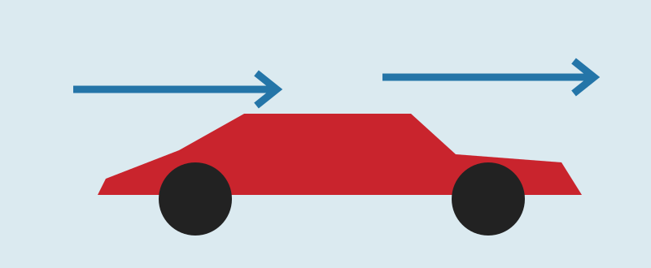

F1 Car Technology
Formula 1 cars are designed to be fast, but they also need to be safe and reliable. Engineers work on many parts of the car, including the engine, tires, brakes, and body shape.

Aerodynamics
The shape of the car helps control airflow. Wings and other parts produce downforce, which helps the tires grip the track. You can read about car design and rules on the FIA Formula 1 regulations page
Tires
Teams choose different tire compounds depending on the weather and their race strategy. Tires can wear out during a race, so drivers sometimes need to make pit stops. Read more from official F1 pit stop guide .
Safety
Driver safety is very important. Modern cars include a protective structure called the halo around the cockpit. Racing rules and safety standards are managed by the FIA.